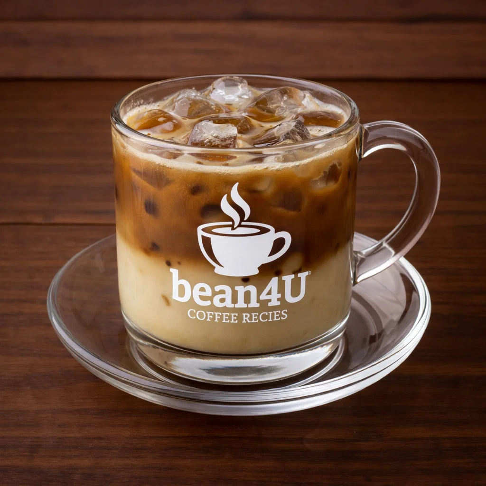

Cà Phê Sữa Đá (Vietnamese Iced Coffee)

Ingredients
- 2–3 tbsp ground dark roast coffee (Vietnamese roast)
- 2–3 tbsp sweetened condensed milk (adjust)
- Ice cubes
Preparation
- Place condensed milk in a glass, brew coffee directly over the milk using a phin or drip method.
- When coffee has filtered, stir to combine then pour over a glass full of ice.
- Stir and enjoy cold.
- youtube short quickly explaining it:
- short Explanation
Video from @vietcoffee
Channel